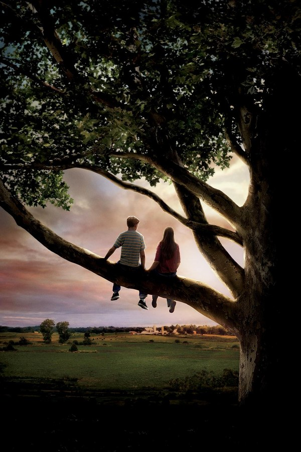
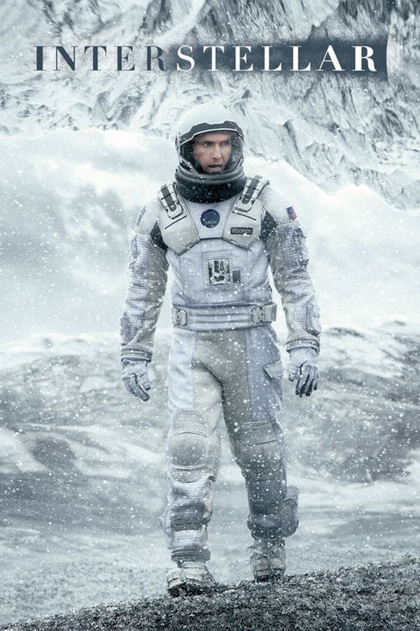
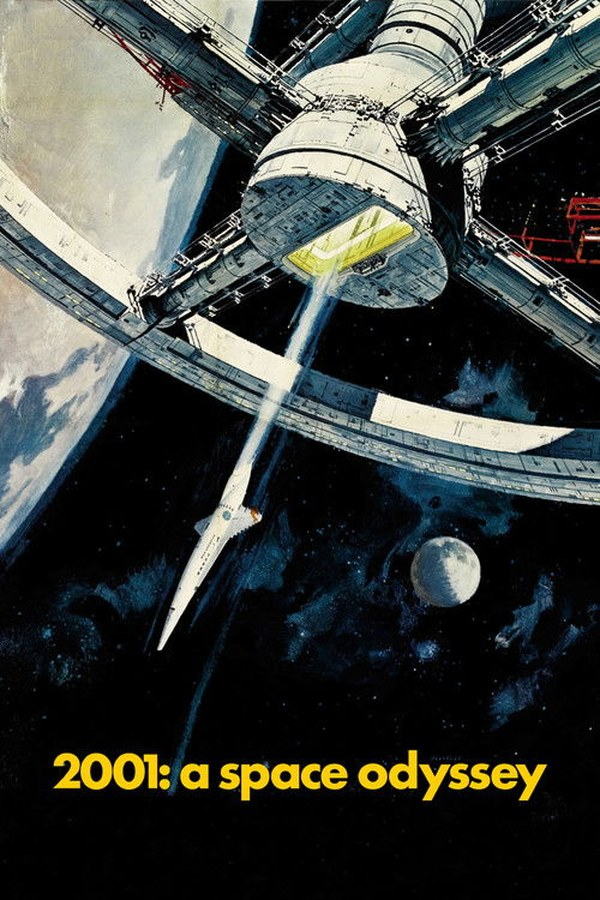
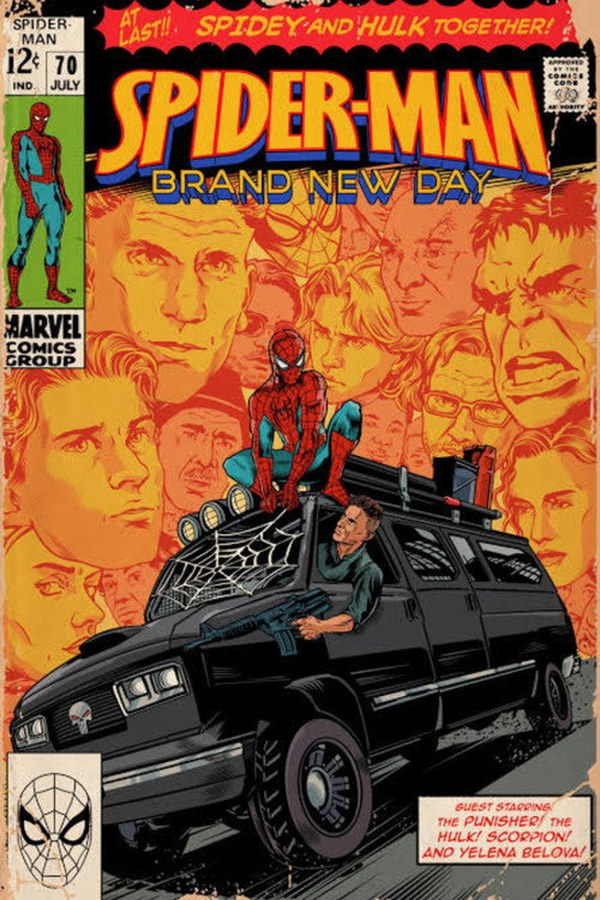
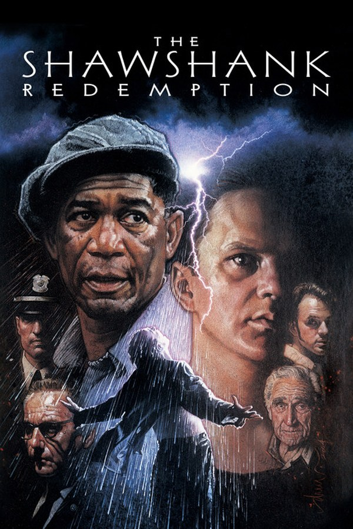
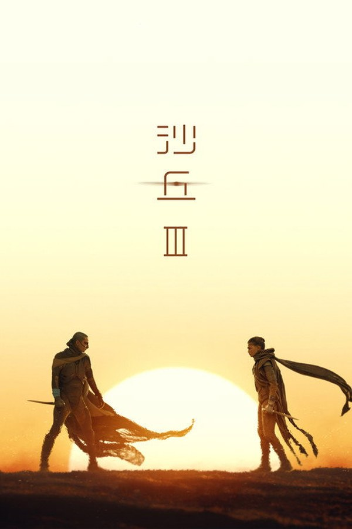
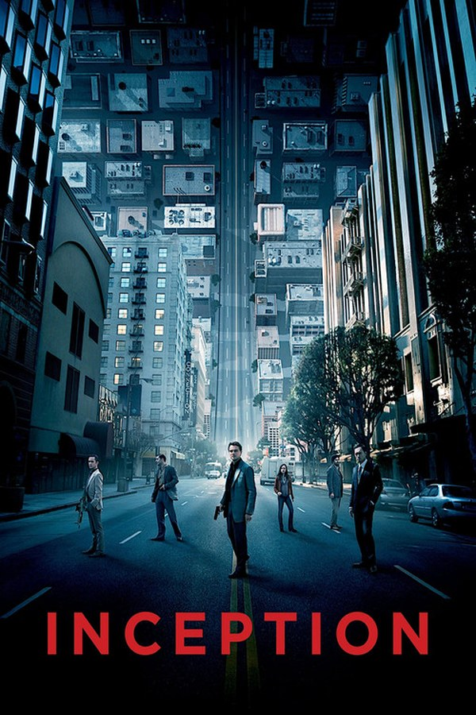

FILM 01Films · Another Life in Light
在光影里，
观看另一种人生。
成长
陪伴
时间
宇宙
FILM 02
《绿皮书》
Green Book · 2018 · 130 min
FILM 03《星际穿越》
Interstellar · 2014 · 169 min
FILM 04《2001：太空漫游》
2001: A Space Odyssey · 1968 · 149 min
FILM 05《蜘蛛侠：崭新之日》
Spider-Man: Brand New Day · 2026 · 待定
FILM 06《肖申克的救赎》
The Shawshank Redemption · 1994 · 142 min
FILM 07《沙丘3》
Dune: Part Three · 2026 · 待定
FILM 08《盗梦空间》
Inception · 2010 · 148 min
向左滑动 · 或点击箭头
注：电影海报为本地保存的公开海报图片，仅用于个人网站展示，版权归各影片版权方所有。